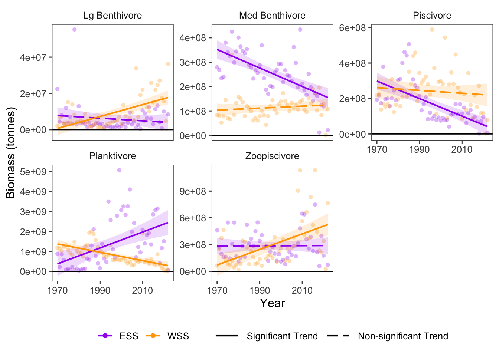

13 Structure & Function: Biomass of Trophic Guilds
Data Type: Tabular Data (within eco_indicators)
Spatial Scope: Maritimes
Duration 1970-2022
Source: Bundy et al. 2017
13.1 Introduction to Indicator
One proximal indicator of changes in ecosystem structure is the biomass of communities in trophic guilds (Bundy, Gomez, and Cook 2017). Trophic guild biomass is quantified through RV surveys, wherein species are categorized into guilds by their prey. Survey records are then q-corrected and aggregated per region.
Changes in biomass of trophic guilds can indicate changes in predation pressure for prey species, and indicate large-scale patterns of change in the resource flow within ecosystems.
For information on categorization into trophic guilds, see (Bundy, Gomez, and Cook 2017).
13.2 View Data
library(tidyr)
library(plotly)
library(stringr)
plotly_df <- data@data %>% inner_join(global_cols2)
# function to create plot with dropdown menu ------------------------------
make_biomassTG_dropdown_plot <- function(df,
year_col = "year",
region_col = "region",
value_suffix = "_value") {
# convert to long format
long <- df %>%
janitor::clean_names() %>%
pivot_longer(
cols = ends_with(value_suffix),
names_to = "metric",
values_to = "value"
) %>%
# remove suffix
mutate(
metric = str_remove(metric, "_value")
) %>%
# drop NAs (some regions don't have data for some variables or years)
tidyr::drop_na(value)
# find all metrics and regions
metrics <- unique(long$metric)
regions <- unique(long[[region_col]])
# clean names for dropdown panels, helper
pretty_label <- function(x) str_to_title(gsub("_", " ", x)) %>% gsub("Lb","Large B",.) %>% gsub("Mb","Medium B",.) %>% gsub("Biomass ","",.)
# build plot -----------------
p <- plot_ly()
# Add bar traces: metric1 has region1..K, metric2 has region1..K, ...
for (metric_i in seq_along(metrics)) {
m <- metrics[metric_i]
for (region_i in regions) {
dat <- long %>%
filter(metric == m, .data[[region_col]] == region_i) %>%
group_by(.data[[year_col]],color, region_group, region_group_label) %>%
summarise(value = sum(value), .groups = "drop") %>%
arrange(.data[[year_col]])
group_name <- unique(dat$region_group)
color <- unique(dat$color)
# If a region truly has no data for that metric, add an empty trace
# (keeps trace indexing stable)
if (nrow(dat) == 0) {
dat <- tibble::tibble(!!year_col := integer(0), value = numeric(0))
}
p <- p %>% add_bars(
data = dat,
x = ~.data[[year_col]],
y = ~value,
name = as.character(region_i),
legendgroup = group_name,
legendgrouptitle = list(
text = ifelse(group_name == "ESS",
"Eastern Scotian Shelf Zones",
"Western Scotian Shelf Zones"
)),
showlegend = (metric_i == 1),
visible = (metric_i == 1),
marker = list(color = color),
hovertemplate = paste0("<b>", region_i,":</b> ","%{y:,.2s}<extra></extra>") )
}
}
n_regions <- length(regions)
n_traces <- length(metrics) * n_regions
buttons <- lapply(seq_along(metrics), function(metric_i) {
vis <- rep(FALSE, n_traces)
shl <- rep(FALSE, n_traces)
idx_start <- (metric_i - 1) * n_regions + 1
idx_end <- metric_i * n_regions
vis[idx_start:idx_end] <- TRUE
shl[idx_start:idx_end] <- TRUE
list(
method = "update",
args = list(
list(visible = vis, showlegend = shl),
list(
title = pretty_label(metrics[metric_i]),
yaxis = list(title = "Biomass (tonnes)")
)
),
label = pretty_label(metrics[metric_i])
)
})
p %>%
layout(
barmode = "stack",
hovermode = "x unified",
title = pretty_label(metrics[1]),
xaxis = list(title = str_to_title(year_col), type = "category"), # keep one bar per year
yaxis = list(title = "Biomass (tonnes)", fixedrange = TRUE),
legend = list(
x = 1.02, xanchor = "left",
y = 1, yanchor = "top",
groupclick = "toggleitem",
itemdoubleclick = FALSE
),
updatemenus = list(list(
type = "dropdown",
x = 0, xanchor = "left",
y = 1.15, yanchor = "top",
buttons = buttons
)),
margin = list(r = 180, t = 80)
)
}
# usage:
p <- make_biomassTG_dropdown_plot(plotly_df)
p <- p %>% config(displayModeBar= F)
p Figure 13.1: Biomass of Trophic Guilds in Scotian Shelf regions; 1970-2022. Use dropdown box to select a target taxonomic or functional group, and click legend to toggle regions.
13.3 Summary and Trends
Trend and summary values are automatically generated; data were last updated on marea package install on 2026-02-10
Biomass values of trophic guilds varied greatly over time and between management areas (Fig. 13.1), with biomass of different groups changing and remaining stable between the Eastern and Western Scotian Shelf (Fig. 13.2).
For individual guilds, biomass decreased for 3 groups (Lg Benthivore, Piscivore, Med Benthivore; 2 significant) and increased for 2 groups (Zoopiscivore, Planktivore; 1 significant) in the Eastern Scotian Shelf. In the Western Scotian Shelf, 2 groups had decreased (Piscivore, Planktivore; 1 significant), and 3 groups increased (Lg Benthivore, Med Benthivore, Zoopiscivore; 2 significant) over time (Fig. 13.2).
The strongest biomass decrease was observed in the Planktivore group in the WSS region, and the strongest increase was in the Planktivore in the ESS region (Fig. 13.2).

Figure 13.2: Overall Biomass trends for taxonomic and functional groups over time.
13.3.1 Summary Table by Region and Functional Group
Trends in Biomass over time for each guild and each NAFO region within the Eastern and Western Scotian Shelf (1970-2022) are shown in the table below (Table 13.1).
| taxon | Eastern Scotian Shelf Biomass Trends (tonnes/year) | Western Scotian Shelf Biomass Trends (tonnes/year) |
|---|---|---|
| Lbenthivore |
4VN: 3.71e+03 4VS: -8.90e+04 ∗ 4W: 2.12e+04 ESS: -8.15e+04 |
4X: 3.28e+05 ∗ WSS: 3.28e+05 ∗ |
| Mbenthivore |
4VN: 1.42e+05 4VS: -1.22e+06 ∗ 4W: -1.74e+06 ∗ ESS: -4.10e+06 ∗ |
4X: 3.98e+05 WSS: 3.98e+05 |
| Piscivore |
4VN: -3.84e+05 4VS: -1.40e+06 ∗ 4W: -2.40e+06 ∗ ESS: -5.04e+06 ∗ |
4X: -7.99e+05 WSS: -7.99e+05 |
| Planktivore |
4VN: 5.53e+04 4VS: 1.53e+07 ∗ 4W: 2.48e+07 ∗ ESS: 3.50e+07 ∗ |
4X: -2.09e+07 ∗ WSS: -2.09e+07 ∗ |
| Zoopiscivore |
4VN: 1.43e+06 ∗ 4VS: 1.68e+06 ∗ 4W: -1.47e+06 ESS: -4.63e+05 |
4X: 8.72e+06 ∗ WSS: 8.72e+06 ∗ |
13.4 Relevance to Research and Stock Assessments
Changes in biomass of trophic guilds represent changes in the structure and energy flow of marine communities. Biomass of trophic guilds can be expected to change as a result of fishing pressure which generally targets high trophic level groups. Fishing pressure can therefore lead to trophic cascades, increasing abundance of some trophic groups, but in turn, increasing predation pressure on lower levels via trophic cascades (Frank et al. 2005).
13.5 Variable Definitions
| variable | description | unit |
|---|---|---|
| year | Year of data collection | |
| region | Region over which data are summarized | |
| biomass_{GROUP}_value | Biomass of select Trophic Guilds within regions | tonnes |